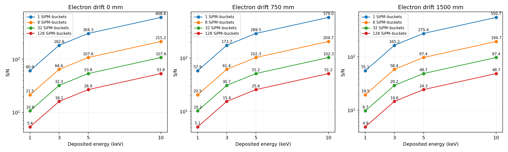
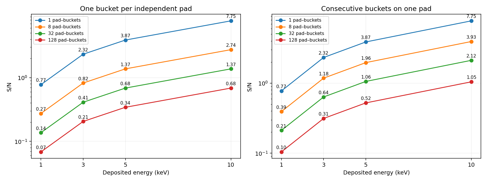

Current geometry: 4 mm pitch, 2.5 mm holes, 3 × 3 mm² SiPMs; Xe–15% He, E/P = 2, PDE 0.32. ASIC noise is 3.542 PE RMS per SiPM–250 ns bucket. Dark noise adds 0.175 PE² per bucket.
S/N = mean detected PE / sqrt(K × (ASIC noise² + 0.175)), where K is the number of acquired SiPM–buckets summed for the deposit. The mean dark signal is subtracted. K is a sensitivity parameter, not a measured occupancy. Signal fluctuations are stored separately in the HDF5.

At 1500 mm drift, summing eight SiPM–buckets: 1 keV → 19.5, 3 keV → 58.4, 5 keV → 97.4, 10 keV → 194.7.
The calculation uses the production EL yield, optical acceptance, 1 mm/µs electron drift and 15 ms lifetime. It assumes linear recovered PE and independent noise. No clipping is expected for these mean signals; concentrating the full 10 keV signal instantaneously on one sensor gives an estimated 4.8% occupancy loss, reduced by recovery and signal sharing. Noise from baseline estimation and searching many possible clusters is not included.
Cards, mean photon/PE counts and all Fano, attachment, EL, collection, PDE, dark and ASIC variance components are saved in fast_trigger_emin.h5. Calculation: 3.16 s.
Mean ions = E / 21.9 eV; no attachment. Fano variance = 0.15 × mean ions. The calibrated single-bucket noise is 58.95 ions RMS. S/N below uses additive CSA noise; the HDF5 also saves signal/total RMS including Fano fluctuations.

Independent pads: summed variance = K × single-bucket variance. Consecutive buckets on one pad: summed variance = sum of every entry of the K × K temporal covariance matrix. Correlations allow noise to cancel in a consecutive-bucket sum. These arrangements are sensitivity cases; they are not predictions of the deposit geometry.
The exact saved linear reconstructed-noise covariance is taken from the matched 4 mm production, with 5 ms voltage averaging and the three-frame inverse. Central windows of a 160-bucket covariance matrix avoid acquisition boundaries. Assume full charge collection and containment in the summed cells. No SPICE or nonlinear response is run; no ADC quantization is added. Calculation: 2.15 s.